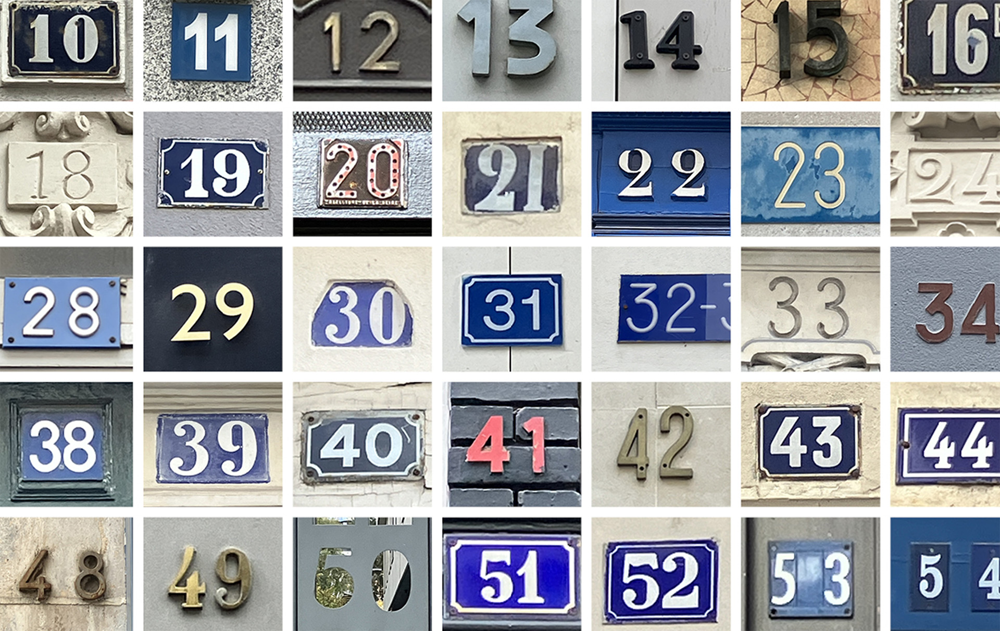
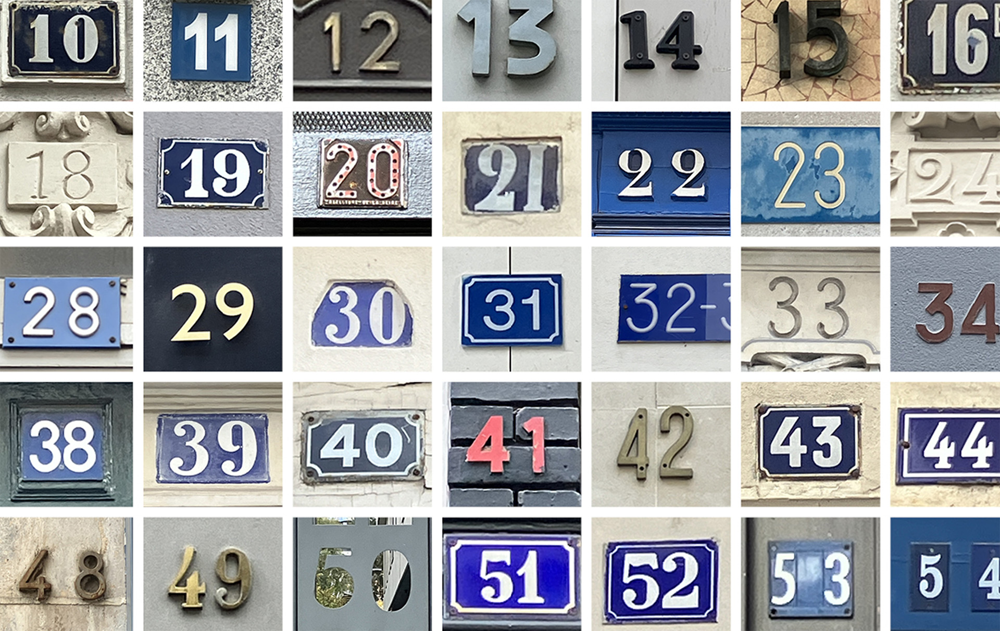

Collecte
[2024]
En lien avec mon sujet de mémoire Penser une identité composite : les collectivités territoriales en France
métropolitaine aujourd’hui, il s’agissait de rendre compte de la richesse graphique des numéros de rue au sein
du quartier des Batignolles à Paris par le moyen d’une collecte photographique.
Ces signes, pourtant peu observés, sont de vraies curiosités typographiques.
Le flipbook permet de rendre saillantes ces singularités formelles peu observée.
Typographie utilisée : Baldinger de BVH Type
 
